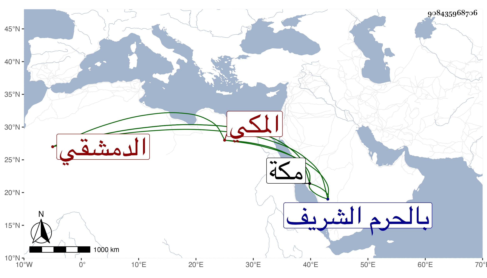

0902Sakhawi.DawLamic.ITO20230111-ara1.EIS1600.908435968706
Biography ID: 908435968706
1053
محمد بن أحمد بن عبد العزيز الدمشقي الأصل المكي المولد والدار ابن أخت أحمد الدوري وشيخ الفراشين بها ووالد عمر ويلقب بيسق لكونه ولد في سنة إحدى أو اثنتين وثمانمائة أو ثلاث حين كان أمير آخور كبير بيسق متولي العمارة بها لما احترق المسجد الحرام بمكة ، ونشأ بها وسمع على ابن الجزري تصنيفه المصعد الأحمد في ختم مسند أحمد ونزل له خاله أحمد بن عبد الله الدوري الفراش بالحرم الشريف عن وظيفة الفراشة قبل موته بقليل في سنة تسع عشرة فباشرها ثم ولي مشيخة الفراشين به وأمانة الزيت والشمع بعد موت نور الدين على بن أحمد بن فرح الطبري مولاهم في شوال سنة ست وأربعين ، واستمر حتى مات في ربيع الآخر سنة خمس وستين بمكة ، وخلفه ولده المذكور .
